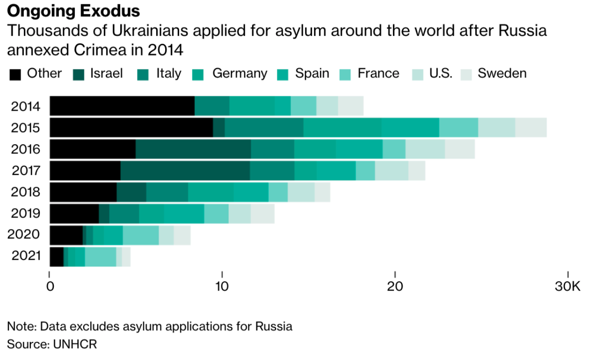
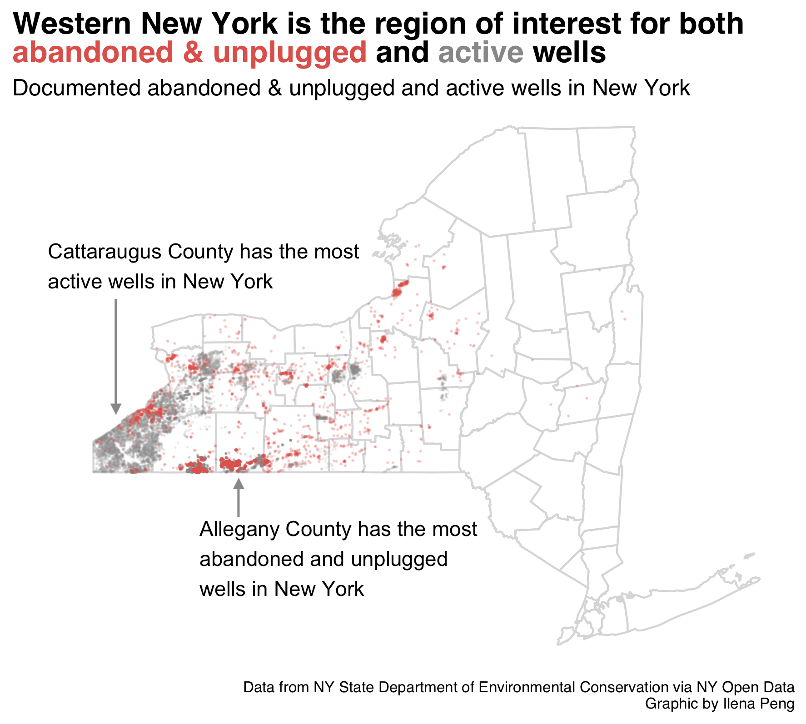
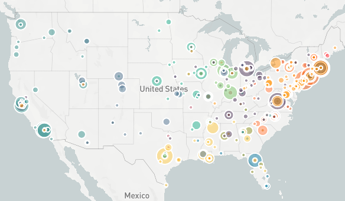

ILENA PENG
👋 Currently: Data journalism master's student at Columbia Journalism School
💻 Things I can use: R, Python, Tableau Public, Adobe Creative Suite, Stata, HTML/CSS/JS
✒️ Publications I've written for: Bloomberg, Washington City Paper, The DC Line, Food52, Nextshark, Teen Vogue
📚 Where I learned: The George Washington University '21, AAJA Voices '21, Medill Cherubs '17
Click here to view my clips >>
Data stories
Click on the headlines to view each project
Asian population declines in Manhattan’s Chinatown

AsAm News Article on the declining Asian population in Manhattan's Chinatown, reported as part of the U.S. Census Bureau's The Opportunity Project
Python, Datawrapper, Adobe Illustrator
More than a million people have fled Ukraine in just one week
Bloomberg News Helped create horizontal bar charts for graphics story on refugees fleeing Ukraine
R (tidyverse), Adobe Illustrator, ai2html
New York’s once-booming oil industry and the wells it left behind
Columbia Journalism School Article on abandoned wells in New York State
Python (analysis), R (visualization)
Where U.S. Appeals Court judges went to school
Columbia Journalism School Interactive map of where U.S. Court of Appeals judges went to school. Final project for the first semester, using web scraping, regex and more in Python
Python, Mapbox GL JS, HTML/CSS
The path to becoming a principal dancer

Columbia Journalism School Career trajectories of American Ballet Theatre and New York City Ballet principal dancers, using manually collected data from the ballet companies' websites
R (tidyverse), HTML/CSS
New York City's 'Open' Streets

Columbia Journalism School A look back on New York City's Open Streets program, which intended to provide more space for social distancing but largely became nonfunctional
Python, QGIS, Illustrator, ai2html, HTML/CSS
Less than a quarter of fall class listings would allow for social distancing

The GW Hatchet Analysis of fall 2020 GW enrollment and room capacities using manually collected data
Stata, Highcharts.js
Youth America Grand Prix winners and locations over time

Personal project Analysis of the international growth of ballet competition Youth America Grand Prix over 20 years
R, Adobe Photoshop
A study of Chopin's études

Personal project Analysis of techniques used in Polish composer Frederic Chopin's études. This project originated as an entry to Tableau's 2021 Iron Viz contest, which you can view here
HTML/CSS, D3.js
Standalone graphics
Why We Visualize

Creative visualization of why people pursued data visualization. Placed in the top 30 in Data Visualization Society's 2021 State of the Industry challenge.
HTML, CSS, D3.js
Black Lives Matter rallies across the United States

The GW Hatchet Chloropleth map of Black Lives Matter protests and riots across the United States
QGIS, Adobe Illustrator
The bees are stressed

Hexagonal heatmap of the percent of bee colonies in each U.S. region facing varroa mites as a stressor
R (tidyverse, ggstar)
California broadband availability

Choropleth map of the percent of population in California counties that have access to broadband
R (tidyverse), Adobe Illustrator, ai2html
Droughts across the United States

Map of percentage of U.S. states living in droughts of various severities
R (tidyverse, geofacet), Adobe Photoshop
India's ongoing transit projects

Start and projected end years of ongoing transit projects in India
R (tidyverse), Adobe Photoshop
Other projects
After the fire
George Washington University Mini documentary on the recovery process for California’s Big Basin State Park following August 2020 fires
Adobe Premiere Rush
GW TRAiLS at Harper’s Ferry
George Washington University Mini documentary on a student-run outdoor adventure group
Adobe Premiere Pro